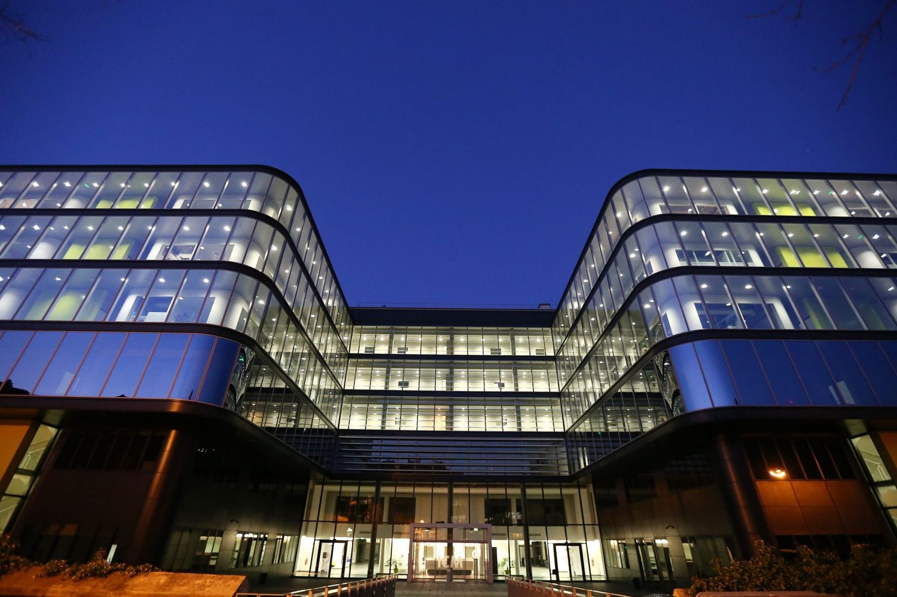
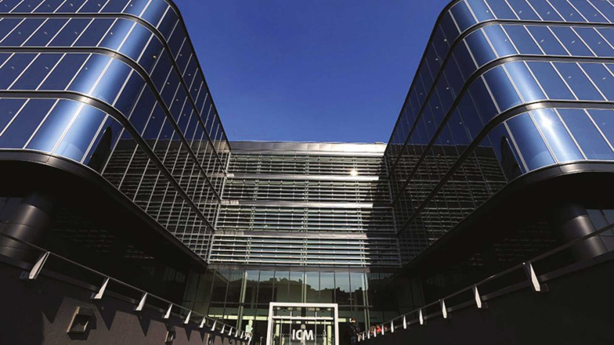
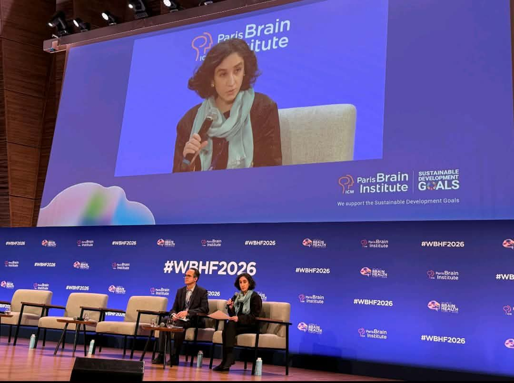

Latent attentional states from eye-tracking and typing
How do attention and absorption change while people work on a creative task? I model them as hidden states behind what the eyes and the keyboard record.

The question
The team studies attention and absorption during creative work. While participants solve creative tasks, an eye tracker records gaze and pupil size, and the keyboard records every keystroke.
My part is to ask whether these signals reveal a small number of recurring attentional states, and how people move between them. A hidden Markov model is a natural fit, because the state of mind is not observed directly. Only its traces in the eyes and the hands are.
The pipeline
The raw files needed work before any model could see them. I built the cleaning step for text encodings, trailing artifacts and corrupted rows, so that every participant ends in one consistent table.
The two streams run at different rates. Instead of resampling one onto the other, I aggregate both over fixed windows. The window length comes from comparing the entropy between windows with the entropy within them, which, unlike correlation, does not assume the signals are normal.
Features
Each window becomes a vector of 30 features from four families of signals.
| Family | What it describes |
|---|---|
| Pupillometry | Pupil size and how it changes over the window |
| Gaze and areas of interest | Where the eyes are and which parts of the screen they visit |
| Blink dynamics | How often and how long the participant blinks |
| Typing behaviour | The timing and rhythm of keystrokes |
Models and validation
k-means gives a first, static grouping of the windows. Gaussian hidden Markov models then add time. Each window is generated by one of a few hidden states, and the model learns how states persist and switch. I fit three-state models by maximum likelihood with hmmlearn, recover the most likely state sequence with the Viterbi algorithm, and read the transition probabilities and the dwell times, which are the quantities of scientific interest.
- Permutation tests check that the state structure is not an artifact of chance.
- Twenty-two random seeds check that the fitted states do not depend on the starting point.
- A convergent-validity test, in design, links the inferred states to what participants report about their own absorption after each block.
What comes next
- Classifying eye-tracker signal loss by where the gaze was just before, where it returns, and whether the participant typed in between.
- Investigating the windows where pupil size is missing.
- Stacking all participants into one data set for a multi-subject model.
Methods only. The data and the results belong to the research team and are not shown here.
At the institute

